0.378120

0.465368

0.509415

0.562418

0.730395

0.759918

0.800527
0.828021

0.854143

0.868980
| Target image | 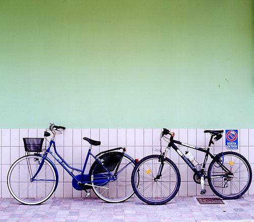 0.378120 | 0.465368 | 0.509415 | 0.562418 | 0.730395 | 0.759918 | 0.800527 | 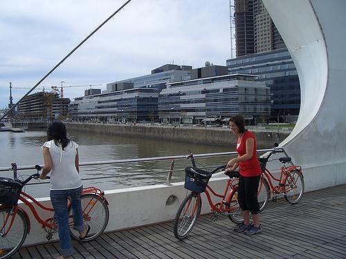 0.828021 | 0.854143 | 0.868980 |
| Target image 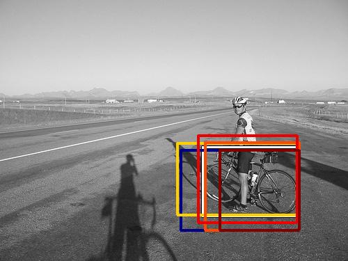 |  6386.955566 | 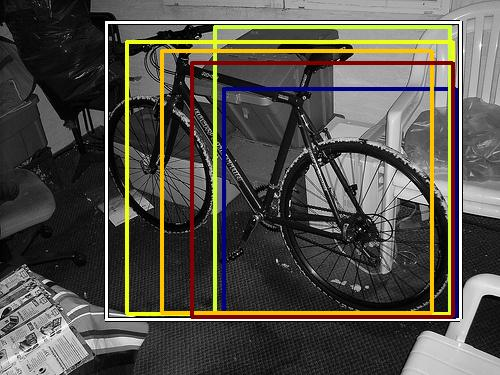 4321.614746 |  3721.547119 |  3419.195557 |  3411.059814 |  3386.743164 |  3333.456787 |  3230.753418 |  3080.608887 |  3006.802002 |
| Target image 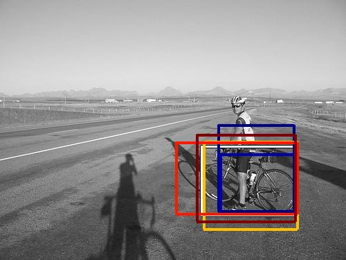 | 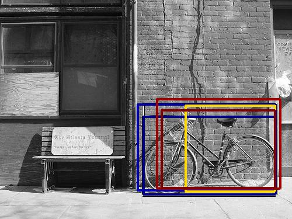 5312.746582 |  4735.700684 |  4469.856934 | 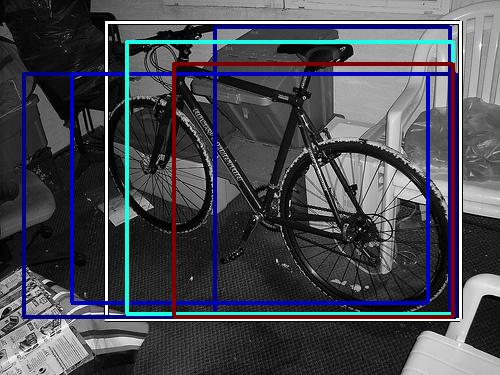 4210.603027 |  4165.241211 |  4102.669922 |  4053.638672 |  4049.886719 |  3952.029785 |  3943.986084 |
| Target image 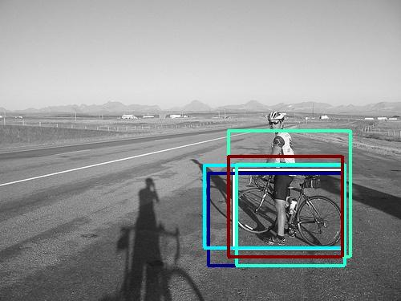 |  6486.178711 |  4576.302734 |  4519.591797 | 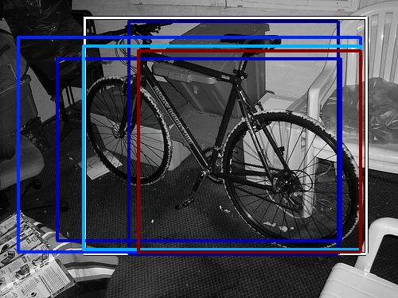 4410.677734 |  4066.916260 |  3742.642090 |  3493.472656 |  3456.931885 | 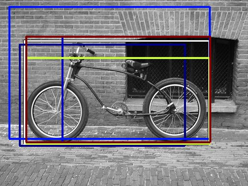 3370.458008 |  3274.650635 |
| Target image 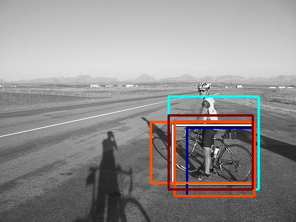 |  5282.083984 |  5228.781250 |  5021.770996 |  4839.477051 |  4409.089844 |  4332.066406 |  4293.490234 | 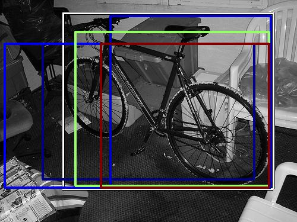 4154.346680 |  3916.018799 |  3888.784424 |